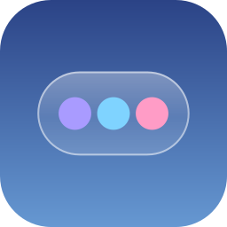

Settings
History is kept only on this computer.No site has asked for a permission yet. When you choose “Remember for this site”, it shows here.
Save your recovery code. It is the only way back in if you forget the sync passphrase. It is shown once.

About MythBrowseServo web engine, Stylo and SpiderMonkey: Mozilla Public License 2.0. Source: github.com/servo/servo. MythBrowse’s small fixes to Servo files stay under the MPL-2.0.
ANGLE (BSD 3-Clause), SQLite (public domain), rustls, ureq, winit and other Rust crates (MIT / Apache-2.0).
MythBrowse © 2026 JustMyth / Tan Ming Jing: Mozilla Public License 2.0, source at github.com/devtmj1123/MythBrowse. The licences and notices of every component are installed next to mythbrowse.exe (LICENSE, NOTICE, THIRD_PARTY_NOTICES.txt). Myth’s answers come from the AI model you configure and can be wrong.